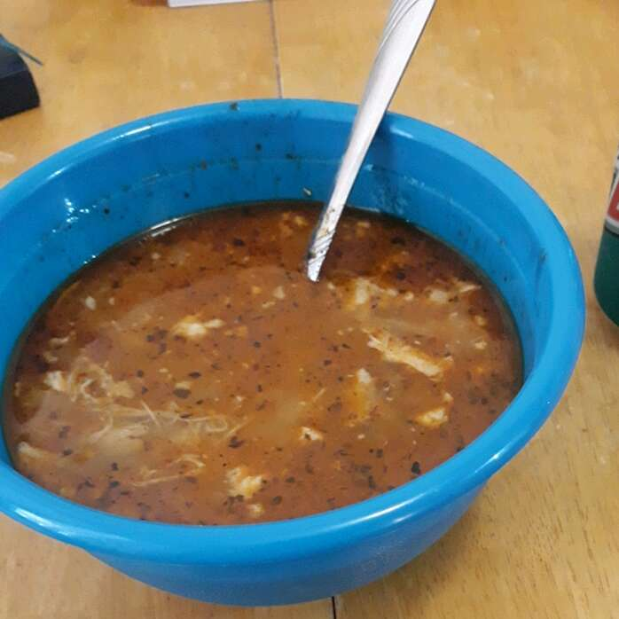

Chicken Posole

This easy to make chicken and hominy soup is one of many great Mexican christmas traditions, or
simply delicious whenever you want to eat something warm and comforting.
It's granished with thinly sliced radishes, shredded lettuce, finely chopped onion, chopped cilantro, and lime wedges, which diners add
to the soup as they please. I love it and Im glad to share this awesome meal with as many people as possible.
Ingredients
- 2 1/2lbs skinless, boneless chicken breast halves
- 4 tablespoons vegetable oil
- 1 onion, chopped
- 3 cloves garlic, minced
- 2 1/2 quartes chicken broth
- 3 cups water
- 1 teaspoon crumbled dried oregano
- 2 teaspoons salt
- 4 tablespoons chili powder or to taste
- 3 cups white hominy, rinsed and drained
- 10 tostada shellds
Steps
- Heat 2 tablespoons canola oil in a deep skillet over medium-high heat. Add chicken breasts, and cook until no longer pink and juices run clear, about 20 minutes. Remove from skillet, drain, and cool. When completely cooled, shred chicken with a fork.
- Heat remaining 2 tablespoons canola oil in the same skillet over medium-high heat. Cook and stir onion and garlic until soft and transparent, about 5 minutes. Return shredded chicken to the skillet. Stir in the chicken broth, water, oregano, salt, and chili powder. Reduce heat to low, cover, and cook about 90 minutes. Stir in the hominy and cook until tender, about 15 minutes more. Taste to adjust seasonings, adding more salt and chili powder, if desired. Serve in soup bowls with1 tostada shell per serving. Garnish as desired.